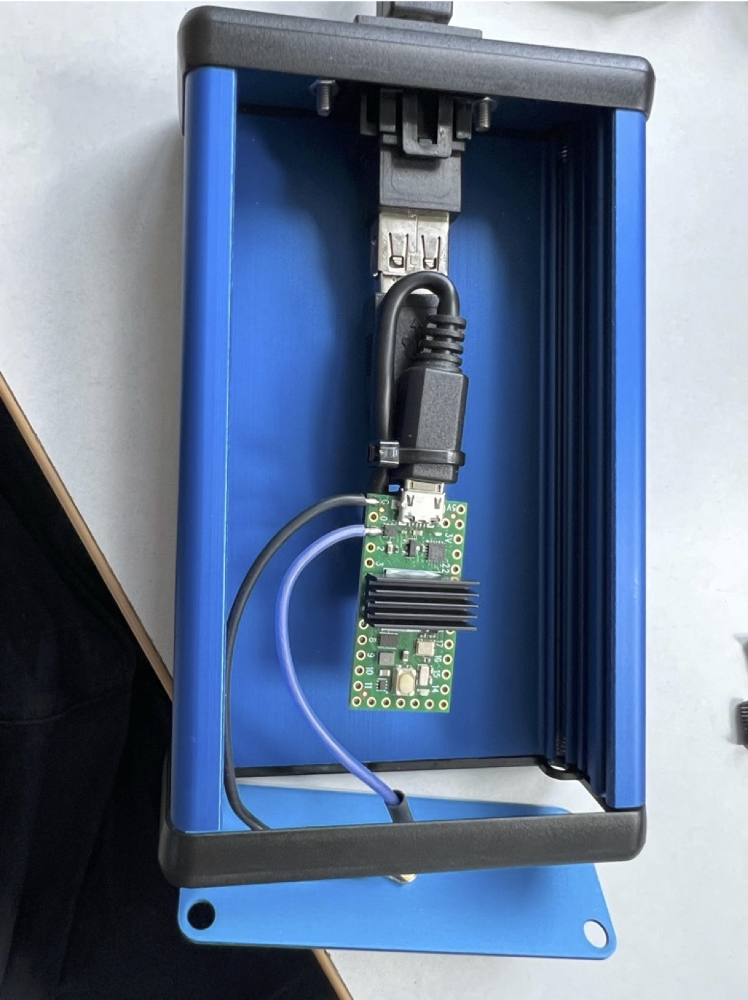
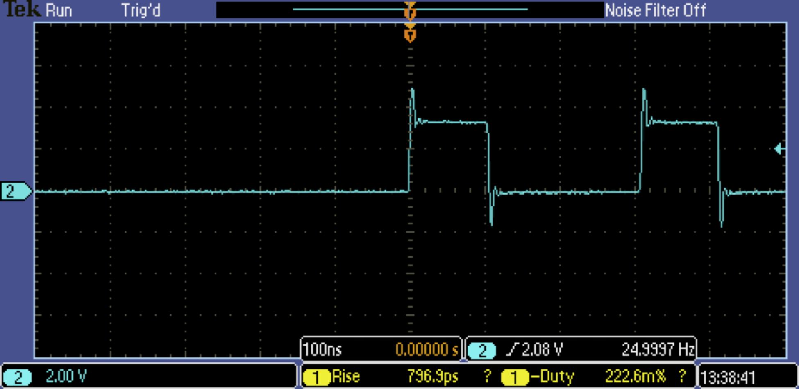

Teensy Double-Pulse Generator
How to use the Teensy Double-Pulse Generator
Introduction
The Teensy double-pulse generator is used to pairs of pulses of duration and separation of 10s of ns, configurable via software. It is implemented using a Teensy 4.0 Microcontoller programmed in Arduino/C and is communicated with via serial over USB. This page contains some details on how to use the generator.

Firmware
The source code for the Teensy is available on github.
Connections
The device is connected to a PC via a USB and has a USB Type B connector.
The output is via SMB and an SMB-to-LEMO cable is provided.
Pulse capability
The device can generate positive TTL pulses of duration and spacing of 20ns or more, and with repitition rates of hundreds of Hz. If using with a NIM fast negative-logic system then you must use a TTL-to-NIM converter module.
For example, the output for:
- pulseInterval: 100 (ms)
- interPulseDelay: 200 (ns)
- pulseWidth: 100 (ns)
is shown in the image below:

Serial Communication
The device is controlled over a USB serial line from a PC that can be communicated with using a terminal program (such as Termite), or using PySerial in Python
Boot-up message
On boot-up the pulse generator sends the following strings over the serial line:
"**************Teensy 4.0 Signal Generator**************");
"> Usage: Send JSON string, for e.g {\"pulseInterval\": 100, \"interPulseDelay\"
"pulseWidth\": 100}."
"> Interval (time between pulse pairs) is in milliseconds."
"> interPulseDelay: Time between the end of the first pulse and the start of the second pulse, in nanoseconds."
"> pulseWidth: Duration of each pulse, in nanoseconds."
"> Robin O'Reilly 2024"
Depending on how quickly your serial communications are started with the device, this string may or may not be received.
Note
If you are going to be reading the device’s responses to your commands (you should!) then it is suggested that you should read available lines when you start your program (with a timeout set) to clear the startup message, if present.
Setting the pulse parameters
To set a given pulse ouput send a json string such as:
where
- pulseInterval is in ms
- interPulseDelay is in ns
- pulseWidth is in ns
The device responds with an acknowledgement or an error, e.g.
'>OK Parsed values - pulseInterval: 100, interPulseDelay: 200, pulseWidth: 200'
or, in the case of an error:
'>ERR ...'
where '...' gives information about the error.
Note
Please note that the interPulseDelay is the time between the falling edge of the first pulse and the rising edge of the second pulse. If you want leading-edge to leading-edge times you must take account of this.
Which com port?
To use in termite or Python we must first find out what COM port it is on. Do this by looking for FT232R USB UART in Windows (7) Devices and Printers, double click on it and select Hardware and we see the COM port (COM3 when I tested this one). If you are having problems I recommend this as a fallback to see what the device is doing.
Alternatively: use pyserial:
PySerial has a useful command which lists active com ports (from Python):
which will produce output like:
Com port configuration
A baudrate of 115200 is needed, all other options can be left as defaults.
Python programming
You can communicate with the device from a PC running Python using PySerial.
To communicate with a serial device in Python we will use PySerial. PySerial should be installed on all lab computers! However, if not installed, on Anaconda Python install with with
or
Connecting to the Teensy Generator
The code below shows how to import pyserial and set up a connection. It is essential to set the timeout as well as otherwise if you try to read the device and it has no data it will block indefinitely.
Some useful PySerial commands (class functions):
write(bytearray) # writes '\n'-terminated byte array to the device
readline() # returns one line
readlines() # returns multiple lines - needs timeoout to be set to know when to end
flush() # flushes the buffer, wait until all data is written
flushInput() # flush input buffer, discarding all its contents
flushOutput() # clear output buffer, aborting the current output and discarding all that is in the buffer.
close() # close the connection
Note
If the connection is open and you try to open it again an error will occur saying something like:
Hence, you should close the serial port when finished with it.
Strings and byte arrays
Arrays of bytes are sent to and read from the device. Thus strings must be converted to bytes and vice-versa.
Note
It is essential to end every write to the device with a newline ('\n')
To convert a string to bytes use:
where ‘utf-8’ is a common string encoding.
To convert bytes to a string use:
on the bytes array.
Examples below will make clearer.
Useful helper function:
Sending JSON strings
Python has a JSON library and can create JSON strings easily from dicts, best illustrated by example:
A bare-bones example:
import serial
import json
ser = serial.Serial(
"com3",
baudrate=115200,
timeout=1
)
print(ser.readlines()) # Maybe get device startup string if fast enough!
def data(mystring):
return bytes(mystring+'\n','utf-8')
js = json.dumps(dict(pulseWidth=100, interPulseDelay=100, pulseInterval=100)
ser.write(data(js))
ser.readlines()